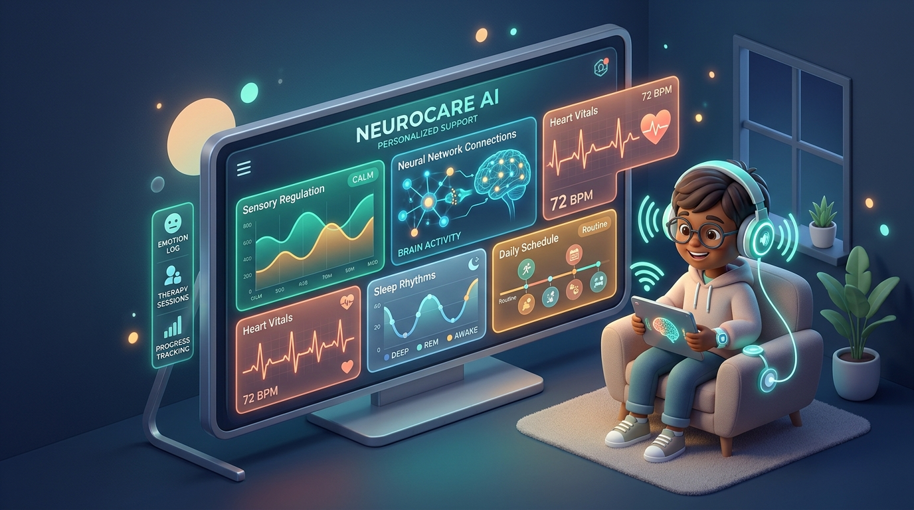
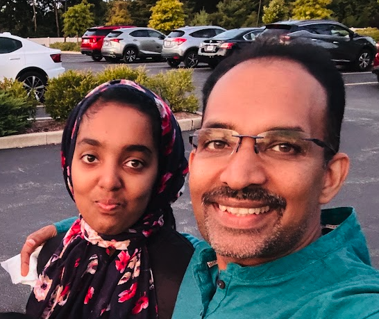

Bridging parents and special educators through continuous sleep, medication, and sensory tracking—transforming daily routines into proactive meltdown prevention powered by Google Gemini. 100% free and non-profit for needy families.

Over 5 million neurodivergent children navigate environments not designed for their sensory biology. Disconnected communication turns manageable overload into preventable crises.
Parents, teachers, and therapists operate in disconnected silos, leading to preventable meltdowns.
Poor sleep or missed medication at home leaves the teacher completely blindsided until a sensory crisis erupts in 3rd period.
Ear covering, pacing, and stimming are mislabeled as "defiance" rather than natural physiological sensory overload.
A frictionless tactile logger connected directly to Google Gemini's reasoning engine to close the loop.
Parents log morning vitals rapidly; educators immediately see a read-only safety glance and 1-touch Sensory SOS.
Instead of static charts, Gemini correlates signals to tell caregivers exactly what accommodations to provide today.
Overcoming friction through a tactile 4-digit PIN keypad. Parents get complete longitudinal tracking; busy educators get zero-friction instant visibility.
Comprehensive tracking, longitudinal trends, and personalized Gemini guidance.
Zero data-entry burden. High-contrast safety glance and emergency calming.
Logging alone doesn't solve autism challenges. Z-Life feeds multimodal signals into Google Gemini to deliver proactive, individualized guidance for families and classrooms.
Gemini's massive context window correlates weeks of sleep duration, nutrition spikes, and menstrual phases to discover subtle triggers humans overlook.
Instead of generic advice, Z-Life generates tailored sensory diets: exact joint compression timings, Walker's earmuff protocols, and oral sensory chewing.
Transforms complex morning home logs and narrative caregiver notes into a concise, empathetic 30-second morning briefing tailored for the student's special education team.
Select a realistic scenario below or tweak the daily signals to watch the AI engine synthesize care recommendations in real-time.
Explore how Z-Life operates across the 24-hour day, its Google Cloud tech stack, and the emergency sensory de-escalation ladder.
Parent logs sleep duration, emotional state, cycle status, and morning medication in <45s using tactile steppers and preset chips.
Teacher enters PIN 5678 to confirm morning rest and medication without interruption. Accesses 1-touch Sensory SOS during high-stress moments.
Parent logs afternoon activities (speech, piano), sensory behaviors observed, calming interventions applied, and voice notes.
LLM correlates the 24-hour dataset against historical baselines, generating next-morning guidance to pre-emptively neutralize triggers.
Lightweight React 19 Single Page Application with zero full-page reloads, tactile 48px touch targets, optimistic UI state updates, and sensory-soothing pediatric palettes.
Leveraging Gemini Flash for ultra-fast <1s morning handoff generation and Gemini Pro with context caching for deep multi-week clinical pattern discovery.
Zero-PII encrypted tokenization, role-separated authentication boundaries, structured JSON logging schemas, and seamless Google Cloud Healthcare API compatibility.
Immediately place Walker's electronic earmuffs on child to eliminate auditory assault.
Apply firm, steady rhythmic proprioceptive pressure to shoulders and elbows (10-15s each).
Offer a neutral-temperature weighted wrap to reset the tactile nervous system.
Set concrete 10-minute timer. Zero verbal demands or questions while timer runs.
Offer crunchy snack or chewelry to stimulate trigeminal parasympathetic calming.
Direct synergy with Google's mission: organizing assistive care information, democratizing healthcare AI, and championing disability accessibility.
Neurodivergent care patterns unfold over months. Gemini's massive 1M+ token context window allows our engine to hold an entire school year's worth of multi-vector daily logs in active memory, uncovering subtle correlations no traditional model can detect.
1 in 36 children worldwide are diagnosed with autism, facing immense emotional and educational barriers. Z-Life aligns directly with Google's Accessibility & Disability Inclusion initiatives by transforming assistive tech from reactive to proactive.
Deploying free assistive intelligence across Title-1 special education schools and autism community centers. Supported through Google Cloud credits and non-profit accessibility grants rather than commercial paywalls.
Assistive neurocare technology should be an accessible human right, not an expensive monthly subscription. Z-Life is strictly non-profit with zero commercial interest, zero paywalls, and zero exploitation of healthcare data.

Firos & Zeba"I built Z-Life out of love and necessity for my daughter Zeba. Watching her struggle with sensory overload and seeing how proactive joint compression and sound dampening restored her daily calm proved to me that data-informed care can transform lives. My solemn pledge is that Z-Life will never be a profit-driven enterprise—it will remain completely free and open for every needy family, autistic child, and caring educator who needs it."
Z-Life is completely open-sourced on GitHub. Anyone—parents, special education schools, occupational therapists, researchers, and developers worldwide—can freely clone, download, deploy on private servers, or customize the complete platform for their own children and students.
Tactile dual-role daily neurocare tracker, dynamic multi-signal logs, emergency Sensory SOS ladders, and Google Gemini AI predictive meltdown analysis.
git clone https://github.com/fiross/zlife.git